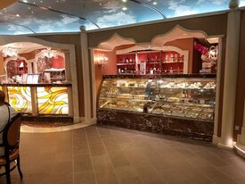

The Sweet Schack was started by husband and wife team Ned & Nikki Schack. Between us we have over 25 years of experience in running kitchens safely and efficiently. We have brought that passion home with us and experimented with all sorts of baked good recipes in our free-time. So why do we love macarons so much? It all goes back to our wedding proposal... Back in 2016 we were vacationing on a beautiful cruise through the Caribbean. Our ship, the MSC Divina, had a wonderful Italian café that we visited every morning (and afternoon, evening, midnight...pretty much any chance we had!). In addition to an array of specialty coffees and espresso concoctions, they also featured a pastry counter with croissants, crème puffs, eclairs, and the most delicious little treat of all - macarons. We had never tried these magic little cookies before, but we were hooked! Crispy, chewy, fruity, creamy, melt-in-your-mouth perfection in every bite? Sign me up! So what about the proposal??...I had brought the engagement ring onboard our cruise just waiting to find the perfect moment to pop the question. At one port in Jamaica, we were going to explore the famously picturesque Dunn's River Waterfall. I had brought the ring along for our excursion, but at the last minute I considered the possibility of it falling into the ocean and getting lost, so I decided to leave it stored in a locker and come up with another plan. Later that night, back on the ship, we were at the café once again when it hit me - ring in the dessert! (I mean it always works in the movies, right?) They had chocolate covered strawberries featured that night - perfect! I placed the ring at the bottom of the carton and waited. Unfortunately, I forgot to account for the fact that we were still stuffed from dinner, and Nikki politely declined my (more romantic than she realized) dessert... Okay I'm not going to take any chances on the next time around. Nikki's favorite dessert is chocolate eclairs, so the next day at one of our frequent café trips, that's exactly what I get. A plate with 2 mini eclairs, the ring securely smooshed into one end. Of course, Nikki chose the non-ring-bearing eclair first, and it turns out it was terrible; she didn't even touch the 2nd one! You can't make this stuff up people...
Long story short, after 3 failed attempts at a romantic surprise, I gave her the ring later that night in our stateroom - luckily she said Yes anyway! But i've always wondered if instead of the strawberries and eclairs, I had used the macarons instead what might have happend... After all that, I couldn't forget about macarons. I wanted to know everything about how to make them so we could start enjoying them at home! I reviewed tons of blogs, websites, and videos learning pretty much one thing: macarons can be scary cookies...But I steeled myself, and pressed forward. The first attempts weren't pretty, but they sure tasted amazing! So we kept trying. And trying. And trying. Then trying some more. And eventually, things started getting better! For the last few years, every holiday, birthday party, graduation, family get together, our pitch-in invariably included a tray of our homemade macarons. We experimented with lots of different flavors along the way and had so much fun creating new treats to share with our friends and family. And everytime, we heard the same thing at least a couple times, "You guys should sell these...I would buy them!"...So one day in 2022, after over 5 years from being introduced to macarons, we decided to take their advice. The rest, as they say, is history...